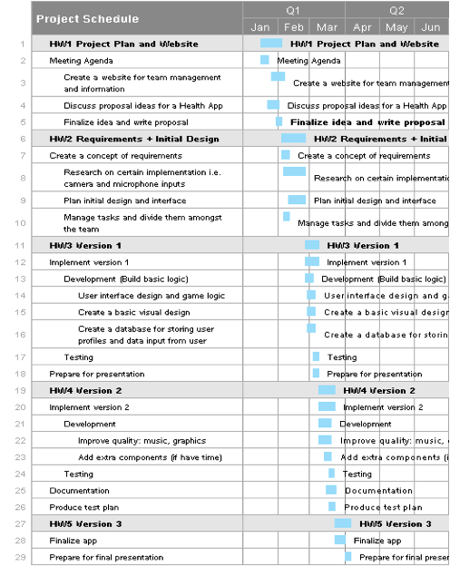

Assignment 1 - Breathify
Project Plan + Website
CMPT 276 - E100
Group 9
Group Members:
Jason Xu
Princess Macanlalay
Keith Chan
Hans Kim
Table of Contents
Project Organization and Staffing Plan
Revision History

|
Revision |
Status |
Publication/ Revision Date |
By |
|
1.0 |
Created |
February 2, 2017 |
Jason Xu, Hans Kim, Princess Macanlalay, Keith Chan |
Project Summary
'Breathify' is a breathing exercise designed to promote healthier lifestyles by helping people improve their health through regular breathing exercises. This will be a useful tool for those who suffer from anxiety and/or stress. The app allows for users to engage in a variety of breathing exercises using an interactive game version or a countdown timer version. The interactive game version will provide a more engaging way to focus on breathing. As an alternative, the countdown timer version will have additional audio cues so that the breathing exercises can be done without having to look at the screen.
Project Overview
‘Breathify’ aims to offer those who suffer from anxiety
or stress a way to minimize their symptoms using a variety of breathing
exercises. Breathing exercises have been shown to be an
effective way of combating moments of high anxiety or high stress. The
American Institute of Stress calls it an activity “that evokes the relaxation
response” which “leaves the body relaxed, calm, and focused” (The
American Institute of Stress). Breathing exercises also “encourages full
oxygen exchange” which “can slow the heartbeat and lower or stabilize blood
pressure” (Harvard Health). The application will provide two main methods
of performing breathing exercises. One method will present a countdown timer
for different stages of the selected breathing exercise accompanied by additional
aural and visual cues to alert the user of which stage of the exercise they are
in. The second method is an interactive game where breathing exercise
steps are to be followed more strictly to encourage more focus with points
awarded for closely following the exercise. The user will have a variety of
breathing exercises to choose from including those that only require simple
breathing to those that require a physical activity to them. For some of the
breathing exercises, users will be able to track their heart rate during the
exercise using the mobile phone’s camera. This heart rate data along with data
about the overall usage of the application will be used to inform the user
about the effects of the breathing exercises and their activity pattern
related to the application. Those vital to the success of the application
are the users who will expect the application to help them with their anxiety
and/or stress, the members of Group Nine, and the SFU Health
Promotion team who is sponsoring the project. All those aforementioned have a
vested interest in producing an application to help those with anxiety and/or
relieve their symptoms through various breathing exercises.
Project Planning
General Meeting Times
· Mon 4:30 pm to 6:30 pm
· Thur 4:30 pm to 6:30 pm
· Extra time for working together: Mon and Thu after the general meeting
Internal Communication
· Report the individual project process
· Report the problem.
· Check the work and make connection between individuals work
· Changing the component of the plan and risk management (depends on the problem we meet)
· Arranging the new task
· Using Trello to record and share the resources
External Communication
· Sharing our idea with students/friends/profs who study in SFU community and get some feedbacks and suggestions.
· We are going to discuss some specific topic/problem with sponsor Dylan and Rosie, which includes
o The visual design of deep breath exercise
o Some treatment for people who are anxious and stressful, which related to the breath exercise.
o Etc.
· Version control: Github
· Swift
· The logic of the breath exercise (main structure): data structure and MVC
· Visual design of the breath exercise
· Database for user profile and statistics
· User interface design
· Hardware support: Camera as a heartrate sensor
· Breathing exercise library
https://cmpt276-groupnine.github.io/website/
Key task and Milestone management
(See more specific task arrangement in Project Schedule)
|
Key task |
Start date |
End date |
Milestone |
|
Research/Preparation Final prep for the implementation |
Feb 5th |
Feb 25th |
1. Concept of requirement 2. Hardware support research: Camera as a heart rate sensor 3. Software support: deciding the final package of software that we use 4. Breathing exercise library 5. Arrange the specific task into individual |
|
Design of main logic and structure |
Feb 25th |
Mar 22nd |
1. Design of the implementation: data structure and MVC 2. Basic implementation of the breath exercise (HW3) 3. Implementation of hardware support (HW3) 4. Optimize the implementation and fix bugs (HW 4/5) |
|
Visual design |
Feb 25th |
Mar 19th |
1. Transfer the implementation of the breath exercise to a simple visual version(HW3) 2. Adding the shapes, color and music that we planned to improve the app (HW4/5) |
|
Database for user profile and statistics |
Feb 27th |
Mar 22nd |
1. Make the connection between the database and logic implementation 2. Build the data 3. Implement the feature of breath report and stat (HW3) |
|
User interface design |
Feb 27th |
Mar 19th |
1. Create a simple user interface for testing. 2. Improve the user interface and make it smooth and creative. |
|
Testing |
Mar 4th Mar 18th |
Mar 8th Mar 21th |
1. Version 1 and Version 2 testing |
Project schedule
Risk management
|
Risks |
Impact |
Likelihood |
Impact Area |
Mitigation Strategy |
|
Project Risk |
|
|
|
|
|
Losing a Team Member |
High |
Low |
Development time |
Better communication, cut unnecessary features |
|
Lacking library for camera heart rate |
Low |
Moderate |
Development time, complexity |
Implement/ address early |
|
Product Risk |
|
|
|
|
|
Camera heart rate sensor library inadequate |
Low |
Moderate |
Development time |
Vet libraries before using |
|
Ineffective Breathing Exercises |
Very Low |
High |
App quality/ variety of exercises |
Only implement if exercises proven effective |
|
Business Risk |
|
|
|
|
|
Bad Reviews |
Low |
Moderate |
Pushes away potential users/ number of downloads |
Clear description of app features, limit initial release to best exercises |
|
Superior competing applications |
Very High |
Low |
Affects number of downloads, causing bad reviews |
Scout out similar apps, incorporate popular features |
Project Organization and Staffing Plan
|
Princess Macanlalay – pmacanla@sfu.ca Developer
· Worked at Sierra Wireless testing software for 8 months · Interest in math and problem-solving · Computer Engineering major and Computer Science minor · Proficient in Python
|
Hans Kim – hansk@sfu.ca Project Manager
· Langara College graduate, Associate of Science degree in Computer Science · Experience with database systems and web applications · Interest in helping users solve daily problems with applications |
|
Jason Xu – ziyoux@sfu.ca Developer · Third year international student · Interest in C++, algorithms and data structures · Enjoys writing papers and essays |
Keith Chan – khc22@sfu.ca Data Management
· Studying a joint major in Business and Computing Science · Likes web development and databases · Interested in using technology to help businesses |
References
H. H. Publications, "Relaxation techniques: Breath control helps quell errant stress response - Harvard health," Harvard Health, 2016. [Online]. Available: http://www.health.harvard.edu/mind-and-mood/relaxation-techniques-breath-control-helps-quell-errant-stress-response. Accessed: Feb. 4, 2017.
K. Marksberry, "Take a deep breath," The American Institute of Stress, 2012. [Online]. Available: http://www.stress.org/take-a-deep-breath/. Accessed: Feb. 4, 2017.
M.-S. Yong, H.-Y. Lee, and Y.-S. Lee, "Effects of diaphragm breathing exercise and feedback breathing exercise on pulmonary function in healthy adults," Journal of Physical Therapy Science, vol. 29, no. 1, pp. 85–87, 2017.